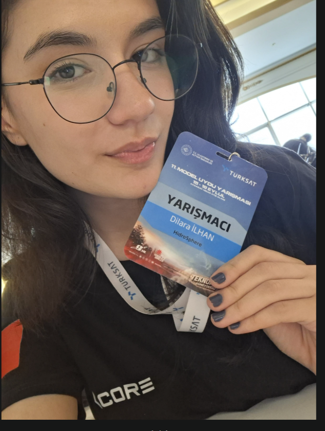
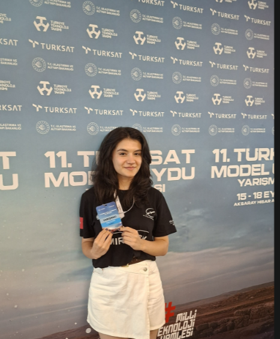
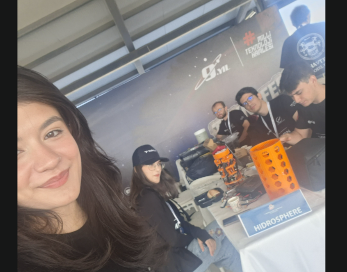
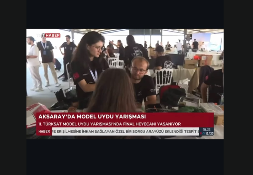
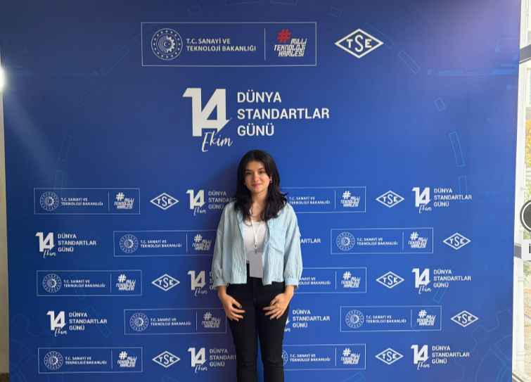

Kişisel Günlüğüm
Yarışmalar, arkadaşlar, ekip çalışması ve unutamadığım anlar... Fotoğraflarımı bu sayfada topladım.
1. Günlük: Yarışma heyecanı
11. TÜRKSAT Model Uydu Yarışması'na Hidrosphere takımıyla katıldım. Bir projeyi yarışma ortamına taşımanın nasıl bir deneyim olduğunu gördüm.

2. Günlük: Takımla birlikte
Takım arkadaşlarımla hazırlık ve yarışma sürecini yaşamak, teknik çalışmalar kadar iletişimin de önemli olduğunu gösterdi.


3. Günlük: Ekranlara yansıyan bir an
Model uydu yarışmasındaki görüntüler bir televizyon haberine de yansıdı.

4. Günlük: Dünya Standartlar Günü
CORE topluluğunun çalışmaları kapsamında Dünya Standartlar Günü etkinliğine katılmak benim için ayrı bir deneyimdi.

Model uydunun teknik ve yarışma günlüğüne geç